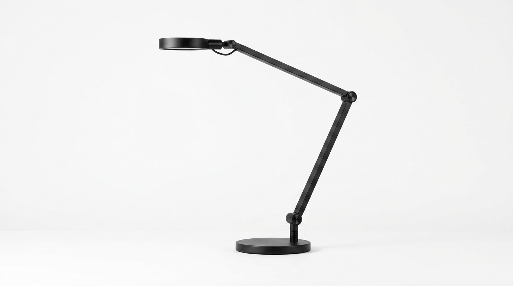
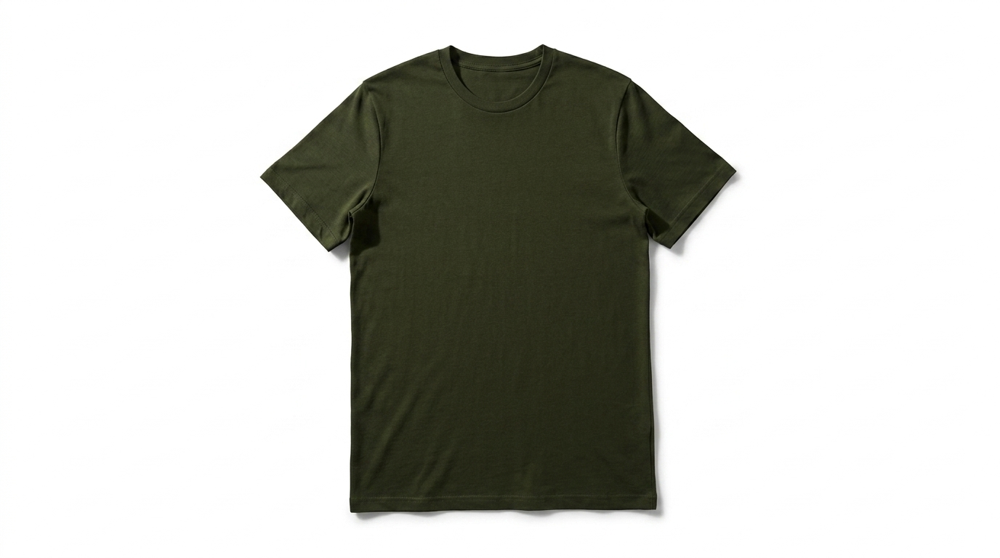
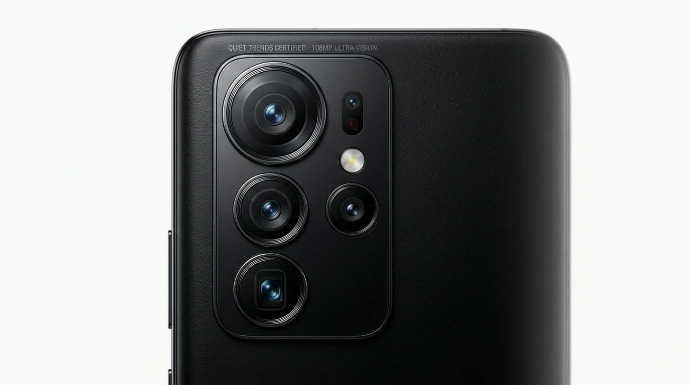
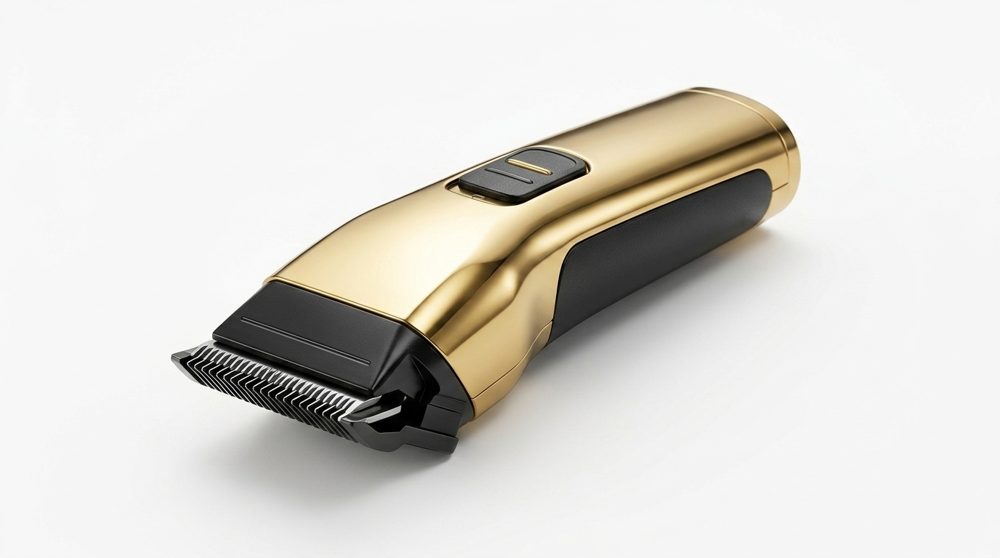
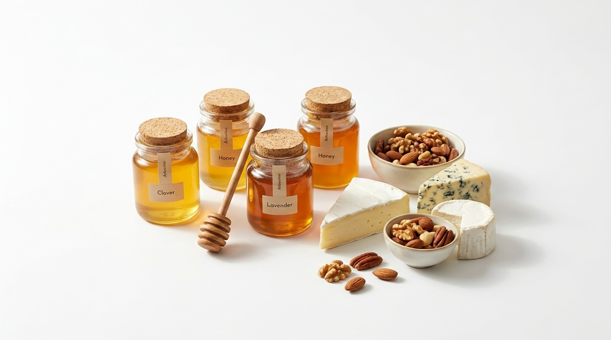
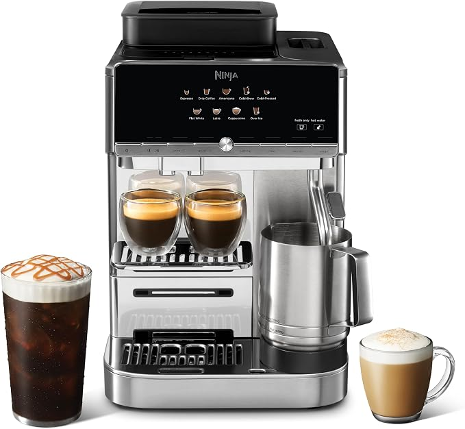
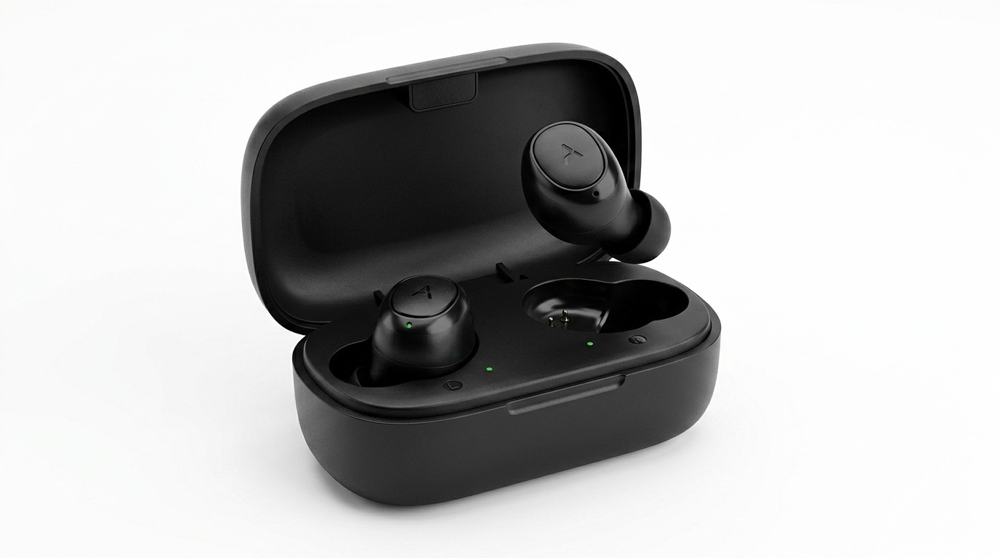
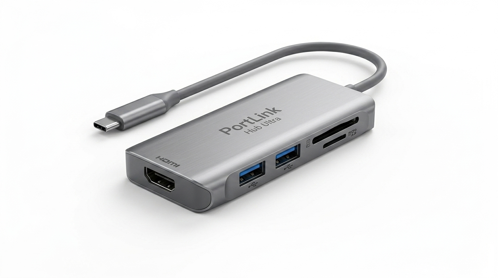

PRODUCT DISCOVERY FOR THE CURIOUS
We find what the review sites missed.
Research-driven analysis of products generating real buyer interest before they become mainstream.




Identify
We scan emerging products with unusual value signals and limited trustworthy coverage.
Analyze
Specifications, positioning, public buyer feedback, and comparison context.
Score
A simple opportunity framework for demand, review gaps, differentiation, and market timing.
FEATURED ANALYSIS
Featured Research & Analysis
QuietTrends researches emerging products, buyer concerns, review gaps, and real-world tradeoffs. These featured articles represent the type of analysis we publish when a product generates curiosity but trustworthy coverage is still limited.

Ninja AutoBarista Pro System
Deconstruction of early coffee extraction thermals and automated pressure control variants logged across consumer testing boards.

AeroBuds Acoustic Isolation
Vector analysis tracking unindexed acoustic custom driver components appearing inside independent audio designer blueprints.

PortLink Multi-Chassis Hub
Scoping localized failure thresholds and connectivity metadata profiles mapped out within hardware prototype circles.